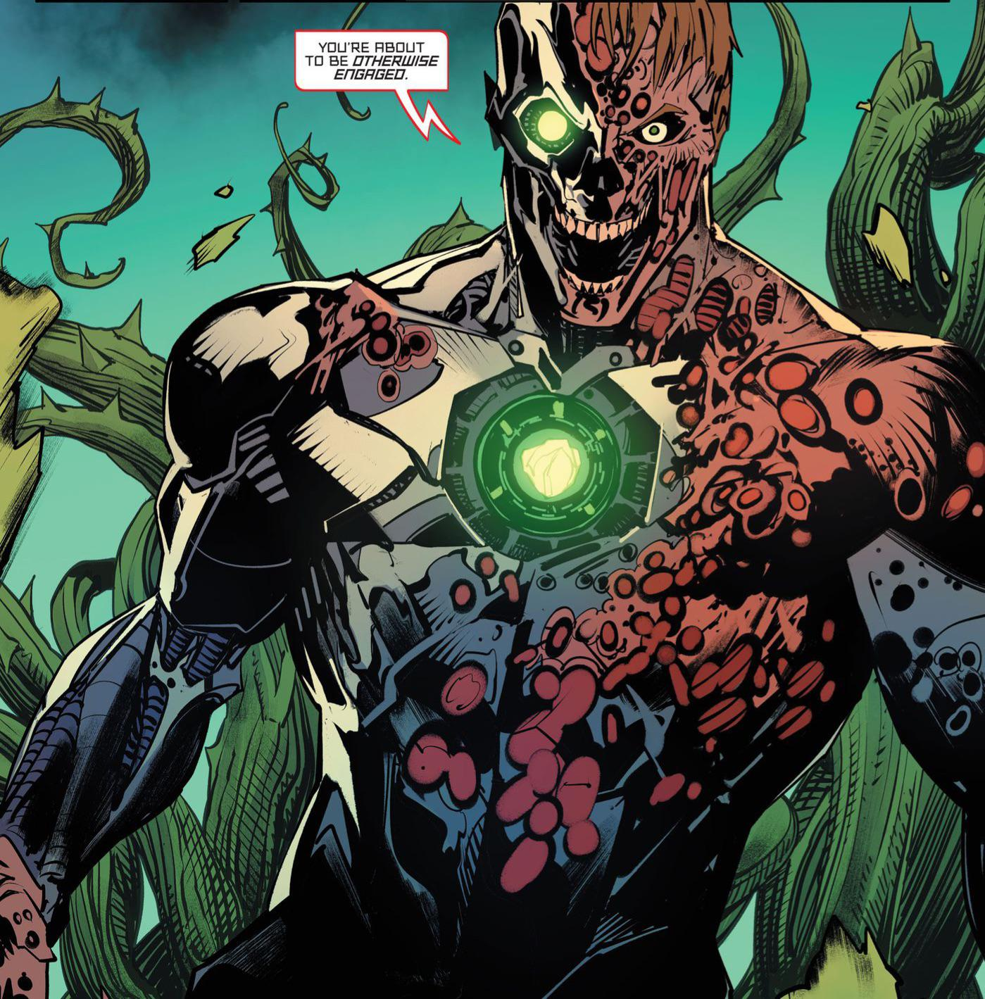

Introdução
Superman é um super-herói da DC Comics criado em 1938 por Jerry Siegel e Joe Shuster. Ele nasceu como Kal-El no planeta Krypton e foi enviado à Terra ainda bebê antes da destruição de seu mundo. Criado por uma família humana em Smallville, ele cresce como Clark Kent e descobre ter poderes como superforça, voo e invulnerabilidade, graças ao sol amarelo. Como Superman, ele usa suas habilidades para proteger a humanidade e é considerado um símbolo de esperança e justiça.

Lex Luthor é um dos principais vilões do universo da DC Comics e o maior inimigo de Superman. Criado em 1940, ele é geralmente retratado como um gênio bilionário, cientista e empresário extremamente ambicioso. Diferente de outros vilões com poderes, Luthor não depende de habilidades sobre-humanas: sua principal arma é a inteligência, além de recursos tecnológicos e influência política e econômica. Ele vê o Superman como uma ameaça à humanidade, acreditando que nenhum ser com tanto poder deveria existir sem controle. Em muitas histórias, essa obsessão o leva a desenvolver planos complexos para derrotar o herói

Darkseid é um dos vilões mais poderosos do universo DC Comics, criado por Jack Kirby. Ele é o tirano do planeta Apokolips e governa seu mundo com mão de ferro, buscando expandir seu domínio sobre todo o universo. Seu principal objetivo é encontrar a chamada “Equação Anti-Vida”, uma fórmula que lhe permitiria controlar completamente a mente de todos os seres vivos, eliminando o livre-arbítrio. Para isso, ele frequentemente entra em conflito com heróis da Terra, especialmente a Superman e a Liga da Justiça. Darkseid é retratado como uma ameaça cósmica quase imbatível, simbolizando o poder absoluto e a tirania em escala universal.

Metallo é um vilão clássico do Superman nos quadrinhos da DC Comics. Seu nome verdadeiro geralmente é John Corben, um criminoso ou soldado que, após sofrer um acidente fatal, tem seu cérebro transferido para um corpo ciborgue. O grande diferencial do Metallo é que seu corpo mecânico é movido por um coração de kryptonita, o que o torna uma das maiores ameaças ao Superman. Isso porque ele pode enfraquecer o herói simplesmente ao se aproximar, já que a kryptonita é extremamente tóxica para kryptonianos. Metallo é caracterizado por sua força sobre-humana, resistência quase total a danos e um comportamento muitas vezes implacável e vingativo, tornando-o um inimigo recorrente e perigoso nas histórias do Superman.